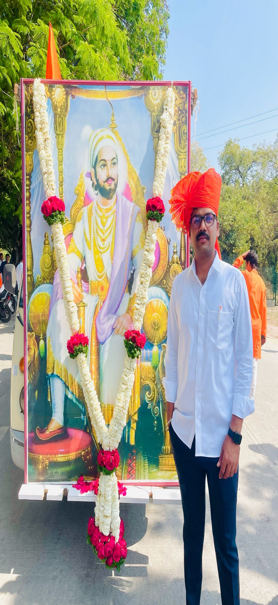
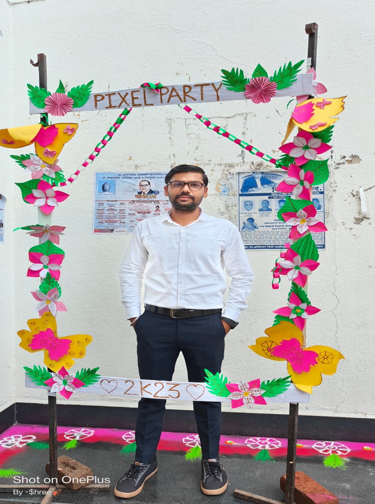
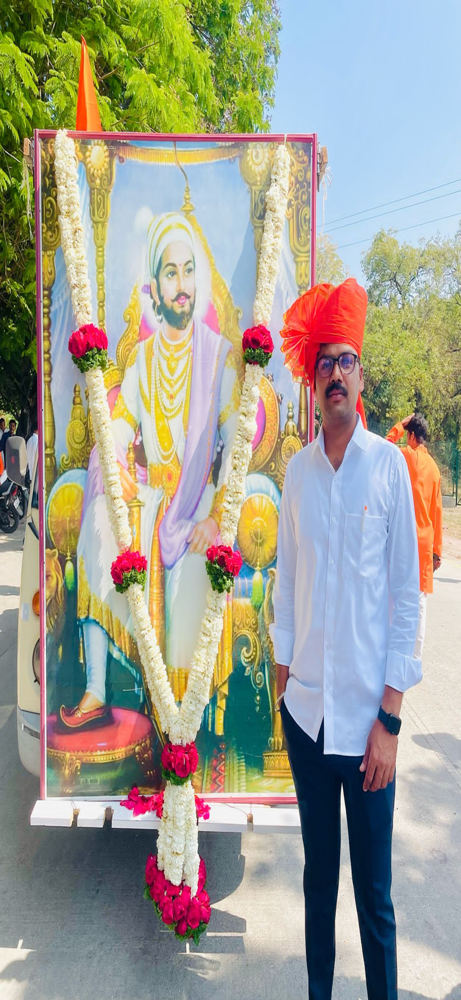
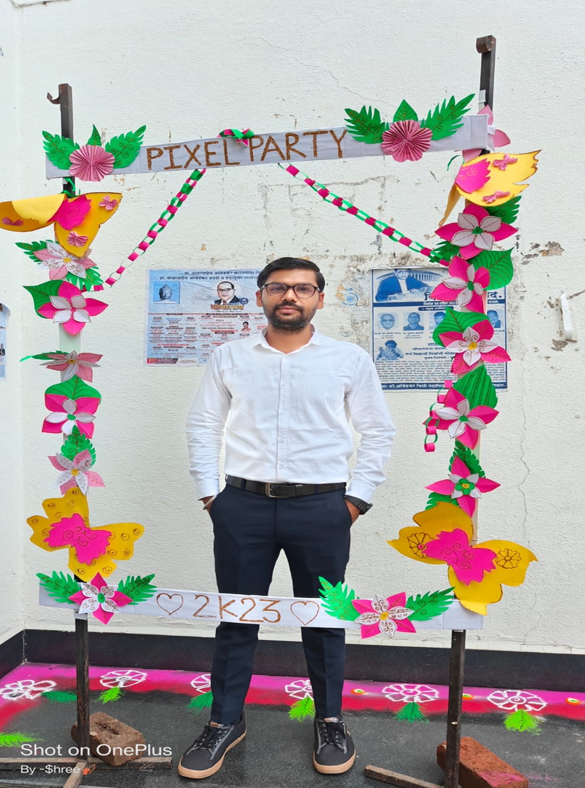
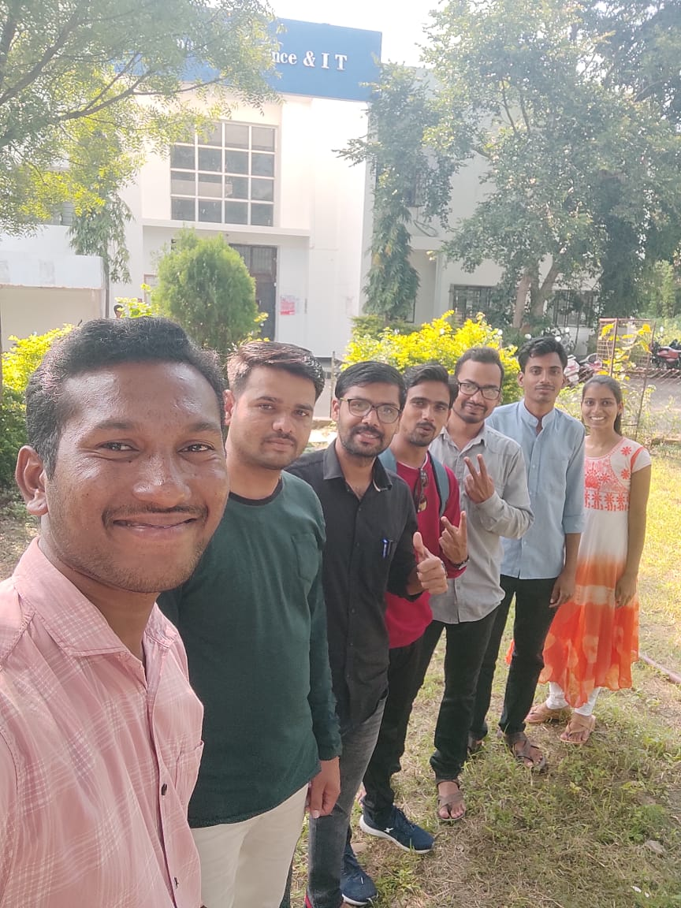
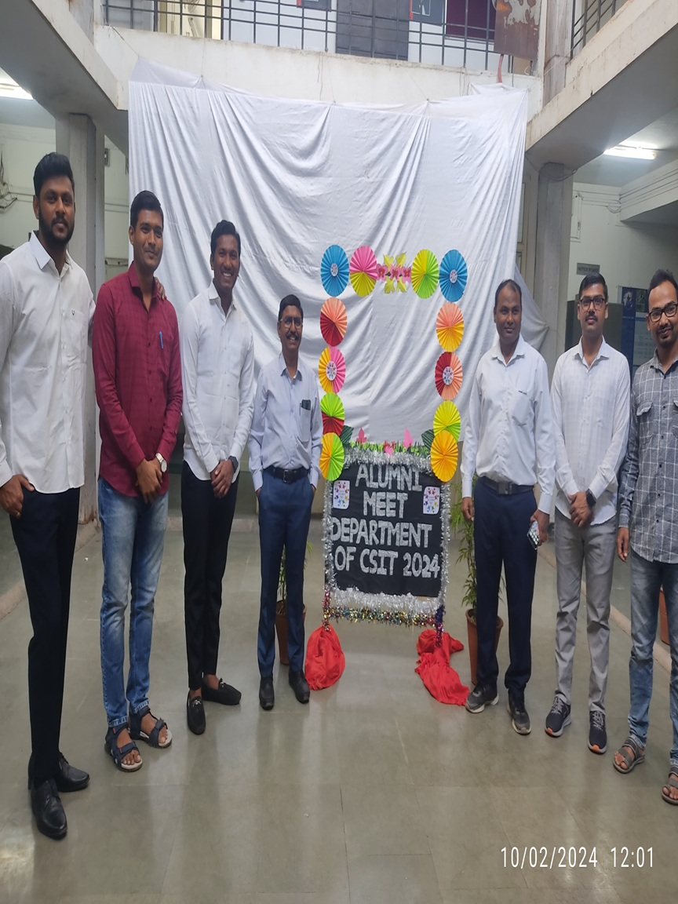
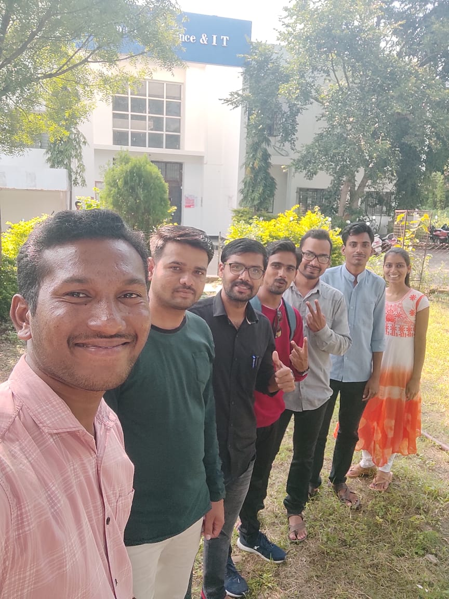
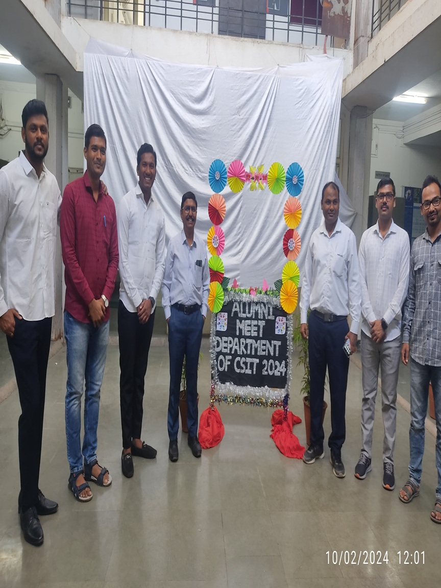

About Me
I am a dedicated researcher and PhD scholar in Computer Science at Dr. Babasaheb Ambedkar Marathwada University, Aurangabad. My doctoral research focuses on Marathi Sentiment Analysis using SenticNet and machine learning. I have a strong academic background, with an M.Phil. in Computer Science and multiple research publications in IEEE and other reputed journals.
Educational Qualifications
| Sr.No. | Qualification | University/Board | Year | Percentage | Grade |
|---|---|---|---|---|---|
| 1. | M.Phil. Computer Science | Dr. Babasaheb Ambedkar Marathwada University | 2024 | 70.9% | A+ |
| 2. | M.Sc. Computer Science | Dr. Babasaheb Ambedkar Marathwada University | 2020 | 66.5% | A |
| 3. | B.Sc. | Dr. Babasaheb Ambedkar Marathwada University | 2018 | 62.12% | A |
| 4. | H.S.C | Maharashtra State Board | 2014 | 63.54% | A |
| 5. | S.S.C | Maharashtra State Board | 2012 | 70.18% | A+ |
Certifications and Government Recognized Courses
| Sr.No. | Certificate Name | Issuing Authority | Year | Percentage | Grade |
|---|---|---|---|---|---|
| 1. | Basic Food Production | Maharashtra State Board of Vocational Education Examination, Mumbai | 2015 | 63.00% | A |
| 2. | Web Developer | National Council of Vocational Education and Training (NCVET) | 2022 | - | B |
| 3. | GCC–TBC Marathi Typing Certificate (30 WPM) | Maharashtra State Council of Examinations | 2016 | 89 | A |
| 4. | GCC–TBC English Typing Certificate (30 WPM) | Maharashtra State Council of Examinations | 2016 | 61 | B |
| 5. | GCC–TBC English Typing Certificate (40 WPM) | Maharashtra State Council of Examinations | 2016 | 64 | B |
| 6. | MS-CIT | Maharashtra State Board of Technical Education (MSBTE) | 2017 | 94 | O |
Research Publications
| Sr.No. | Paper Title | Conference/Journal Name | Year | Link |
|---|---|---|---|---|
| 1. | Review on Sentiment Analysis of Marathi Language of Maharashtra | IJRASET | 2023 | View |
| 2. | Creating Marathi Sentiment Analysis Library with Senticnet | CCSN | 2023 | View |
| 3. | A Machine Learning and DL Approach to Marathi Sentiment Analysis Using Senticnet | IEEE InC4 | 2024 | View |
| 4. | Enhanced Marathi Speech Recognition Using Double Delta MFCC and DTW | IJDT | 2023 | View |
| 5. | Review on Isolated Urdu Character Recognition: Offline Handwritten Approach | IJRASET | 2023 | View |
| 6. | Recurrent Neural Networks for Chatbot Excellence: Examining the Power of LSTM Architecture | ICTIS | 2024 | View |
| 7. | Pre-Processing Techniques for Mobile SMS Spam Detection | IEEE PuneCon | 2024 | View |
| 8. | Machine Learning -Based Handwritten Isolated Urdu Character Recognition: Comparative Analysis | IJARESM | 2024 | View |
| 9. | Basic Morphometric Analysis of Sillod Taluka watersheds: Dist. Aurangabad, Maharashtra, India Using RS and GIS Techniques | High Tech Letters | 2024 | View |
| 10. | Seasonal Analysis of Vegetation, Moisture, Urbanization, and Land Surface Temperature (LST) Using NDVI, NDMI, NDWI, and NDBI Indices: A Case Study of Sillod, Maharashtra | IEEE ICCCIT | 2025 | View |
| 11. | COMPARATIVE EVALUATION OF AODV, OLSR, AND DSDV ROUTING PROTOCOL PERFORMANCE IN MANET USING NS-3. | IJARCS | 2025 | View |
Skills
- Programming: HTML, CSS, JavaScript PHP, Python
- Tools: SPSS, Power BI, XAMPP
- Database: MySQL, Oracle
- OS: Windows 10
Experience
- Research Fellow, Dr. BAMU (2023–Present)
Gallery


 





 





Contact
Email: csit.rmg@bamu.ac.in
Phone: +91 9545995281
Location: At. Ukkad Pimpri Tq. Geora Dist. Beed, Maharashtra, India - 431127
Download My Resume
Click below to download a PDF version of my resume.
Download Resume (PDF)